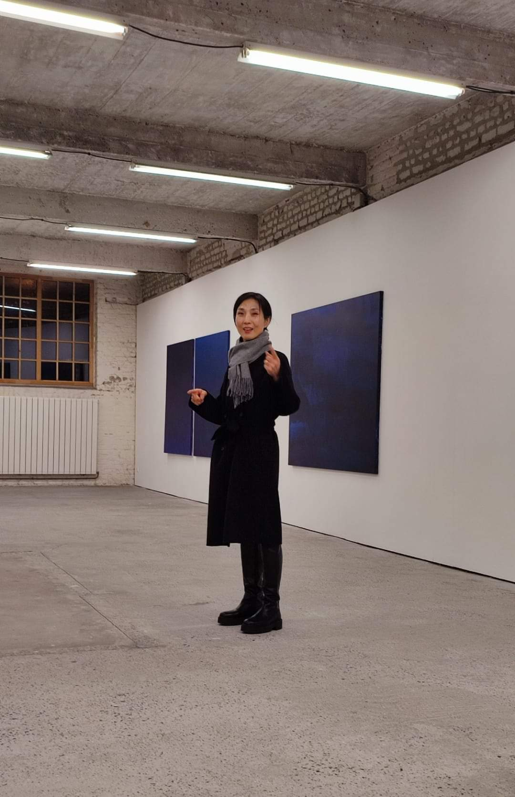

<div style="background: #38A7A6; padding: 20px; font-family: Arial; color: black;  font-weight: bold; text-align: center; width: 950px; border-radius: 10px; margin: auto;">
<span style="font-size: 34px; line-height: 70px;">Hye Sook YOO</span><br />
<span style="font-size: 24px; line-height: 40px;">Artiste coréenne</span><br />
<span style="font-size: 18px; line-height: 40px; ">Exposition <i>Let's get blue</i> à L'H du siège, du 9 janvier au 2 mars 2024</span><br />
</div>

<table style="margin: auto; border-spacing: 18px;">
 <tr>
   <td style="background-color: #90C8AC; height: 175px; width: 300px; padding: 10px; font-size: 28px; text-align: center; border-radius: 10px;"><a href="./Présentation de Yoo Hye-Sook.mp4" style="color: black; text-decoration: none; font-family: Arial; color: black; ">Présentation de Hye Sook Yoo</a></td>
   <td style="background-color: #73A9AD; height: 175px; width: 300px; padding: 10px; font-size: 28px; text-align: center; border-radius: 10px;"><a href="./Pourquoi Hye Sook Yoo a-t-elle quitté la Corée du Sud.mp4" style="color: black; text-decoration: none; font-family: Arial; color: black;">Pourquoi Hye Sook Yoo a-t-elle quitté la Corée du Sud ?</a></td>
   <td style="background-color: #90C8AC; height: 175px; width: 300px; padding: 10px; font-size: 28px; text-align: center; border-radius: 10px;"><a href="./L`art en Corée du Sud.mp4" style="color: black; text-decoration: none; font-family: Arial; color: black;">L'art en Corée du Sud</a></td>
  </tr>
   <tr>
   <td style="background-color: #73A9AD; height: 175px; width: 300px; padding: 10px; font-size: 28px; text-align: center; border-radius: 10px;"><a href="./Pourquoi Hye Sook YOO s’intéresse-t-elle à la couleur bleu .mp4" style="color: black; text-decoration: none; font-family: Arial; color: black;">Pourquoi Hye Sook YOO s’intéresse-t-elle à la couleur <i>bleu</i> ?</a></td>
   <td style="background-color: #90C8AC; height: 175px; width: 300px; padding: 10px; font-size: 28px; text-align: center; border-radius: 10px;"><a href="./Quelles sont les techniques utilisées par Hye Sook YOO-2 .mp4" style="color: black; text-decoration: none; font-family: Arial; color: black;">Quelles sont les techniques plastiques utilisées par Hye-Sook YOO ?</a></td>
   <td style="background-color: #73A9AD; height: 175px; width: 300px; padding: 10px; font-size: 28px; text-align: center; border-radius: 10px;"><a href="https://www.yoohyesook.com/" style="color: black; text-decoration: none; font-family: Arial; color: black;">Le site internet de Hye Sook YOO</a></td>
  </tr>
 
</table>
 <tr>
 <div style="background: #dfd5d5; padding: 3px; font-family: Arial; color: #c02020;  font-weight: bold; text-align: right; width: 210; border-radius: 10px; margin: auto;border-spacing: revert-layer;margin-top: 20px;padding-left: 3px;">
<span style="font-size: 15px; line-height: 40px;"><a href="./index.html" style="color: black; text-decoration: none; font-family: Arial; color: white;">Retourner à la page d'accueil</a></span></div>
</tr>
